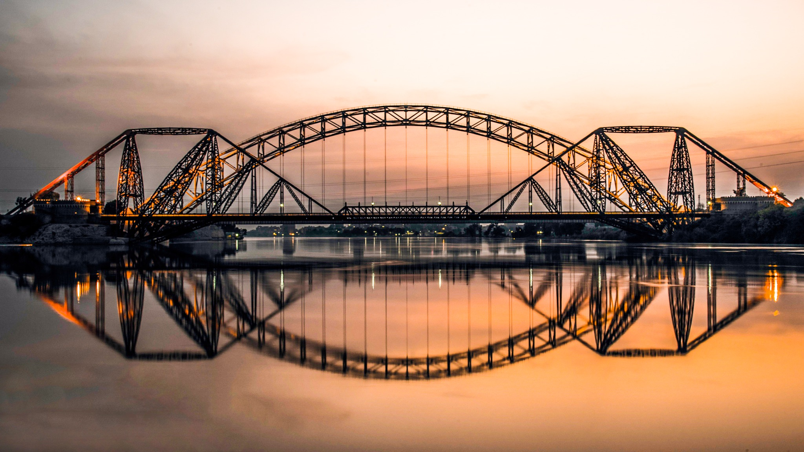

<div class="portfolio-single-load clearfix">
    <div class="custom-full-width-box">
        <div class="custom-container">
            <div class="custom-row align-items-center">
                <div class="custom-image-column">
                    
                </div>
                <div class="custom-text-column">
                    <h2 class="custom-heading">Sukkur</h2>
                    <p class="custom-paragraph">
                        Sukkur is the third-largest city in Sindh province; Located at the bank of River Indus. Formerly Sukkur was named Aror or Bakhar, but later given the name Sukkur which means superiority in Sindhi. The cultural spots and bazaars in Sukkur show how rich it is in Sindhi culture, and they are the most prominent attractions of the city.

                    </p>
                </div>
            </div>
        </div>
    </div><!-- .custom-full-width-box end -->

</div><!-- end single-project -->
